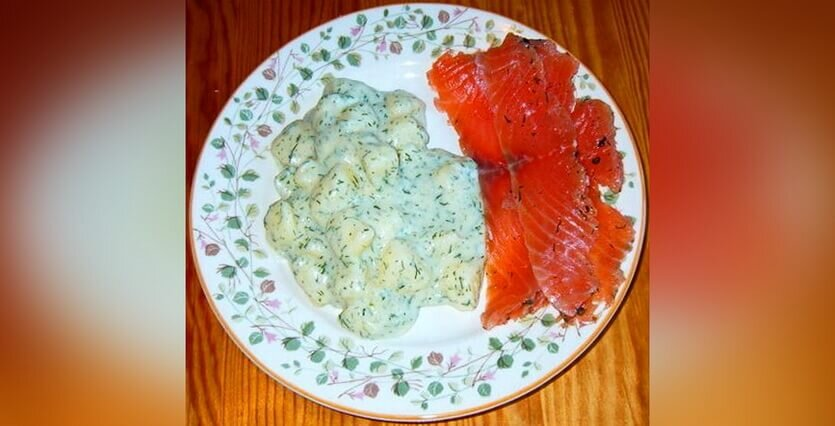

Финская культура
Традиции Финляндии
Финляндия ( Суоми) — маленькая северная страна с пятимиллионным населением, на ее территории насчитывается около 190 тысяч озер. Говоря кратко о культуре и традициях Финляндии, стоит отметить бережное, отношение граждан к своей природе, памятникам истории и архитектуры. Финны — нация консервативная, не спешит принимать новое и тщательно хранит давние традиции.
Особенности финского менталитета
На формирование финского национального менталитета повлияли три фактора:
суровые условия севера;
национальная культура, краеугольный камень которой — народный эпос «Калевала»;
протестантская ветвь христианства — лютеранство, ставшее национальной религией Суоми.
Медлительность и немногословность финнов можно объяснить северным темпераментом. Эти люди могут показаться холодным и замкнутым народом, но такое поведение объясняется их скромностью и сдержанностью. Они склонны к размышлениям в одиночестве, поэтому стремятся оберегать свое пространство, признавая такое же право за другими.
Считается, что «Калевала» (мифы и легенды, выражающие дохристианские религиозные представления народа) отражает национальный дух, единство и самобытность финнов. Эпос с его героическими образами сыграл большую роль в возникновении финских идей и создании национальной культуры.
Жителей Суоми отличает самостоятельность, независимость, честность. С детства их учат рассчитывать только на свои силы, винить во всем только себя и исправлять все самим. Финн честен, потому что предоставлен только сам себе и Богу, а «самому себе не солжешь». Он не кичится, если чего-то добился, потому что, по его лютеранским понятиям, другие люди ничуть не хуже.
В лютеранском сознании финнов все люди равны, невзирая на титулы и богатство. У них не принято пускать пыль в глаза, приукрашивать себя броской одеждой или косметикой. Финны не различают труд квалифицированный и простую работу. По лютеранскому учению, труд — самое важное, постыдной работы нет, стыдно не работать. Это трудолюбивый и упорный народ, сумевший среди камней и болот создать процветающую страну.
ВАЖНО! Хотя число верующих лютеран в Финляндии сейчас составляет до 68 %, менталитет жителей Суоми остается прежним.
Сами финны специфическую особенность своего национального характера выражают словом «сису» (sisu), которое означает твердую силу воли, требовательность к себе, упорство, выносливость и рациональную последовательность в преодолении неприятностей.
Основные финские традиции
Народ Финляндии очень заботится об окружающей среде и животных. Финны любят спорт, рыбалку, охоту и баню (сауну).
Природа и животные в жизни финнов
Финны близки к природе, делают все для сохранения чистоты окружающей среды, очень ответственны в отношении к животным. В финском обществе существуют строгие правила насчет этичного обращения с дикими и домашними животными.
Собаки в Финляндии считаются лучшими друзьями человека, поэтому в стране много приютов, и встретить бродячую собаку — большая редкость. Если финн увидел безнадзорное животное — кошку или собаку, — он вызывает полицию. Если зверь оказался на улице по вине хозяина, у того будут неприятности. Штраф грозит и владельцу бизнеса, если он не оборудовал возле здания участок, где клиенты могут оставлять собак.
ЭТО ИНТЕРЕСНО! Строгие правила приводят к тому, что не пристроишь котят от своей кошки по знакомым. Этим занимаются только приюты и питомники. А чтобы завести домашнее животное, надо выдержать своего рода экзамен на готовность нести ответственность за живое существо и доказать, что жилищные условия отвечают для него нормам безопасности.
Спортивный стиль жизни
Занятия спортом — одна из главных традиций финнов, ставшая их образом жизни. Лыжный спорт — самый популярный в этой снежной стране. В Финляндии много горнолыжных курортов и склонов. Катаются финны и в Лапландии в феврале.
На втором месте в стране по распространенности — хоккей. Долгая и морозная зима позволяет обустраивать открытые катки, где могут играть любители.
Третью позицию в Финляндии занимает автоспорт. Знаменитое ралли «Тысяча Озер» ежегодно проводится уже более полувека, и каждый год на соревнование собирается около полумиллиона человек.
Финская баня
Сауна — неотъемлемая часть финской культуры. От русской бани она отличается сухостью пара. Строят сауны в тихом месте, часто возле озера. Их посещение для финна не просто гигиеническое мероприятие, а ритуал очищения тела и души.
Рыболовство и охота
В стране, богатой озерами и реками со всякой рыбой, излюбленное занятие мужчин — рыболовство. Каждый год в Финляндии проходят состязания по рыбной ловле с огромным количеством любителей рыбалки.
Для охотников предусмотрены специальные испытания, чтобы они могли получить разрешение охотиться на тех или иных животных. К разрешению надо собрать пакет документов. Охотничий сезон в Финляндии длится с сентября по январь.
Катание на оленях
Лапландия — сказочное место в Финляндии: здесь находится деревня Санта-Клауса. В Лапландии разводят северных оленей. Посещение оленьей фермы и катание в упряжке по угодьям Санта-Клауса — традиция среди туристов.
Оленем управляет каюр при помощи хорея — специального шеста. Разрешают и гостям «порулить» упряжкой. Экскурсии и катания завершаются угощением традиционными лепешками в чуме — шалаше в виде конуса, обтянутом оленьими шкурами.
Обычаи финнов в общении
Перед путешествием по Финляндии стоит учесть особенности и обычаи финнов в общении:
Не принято приходить в гости без приглашения, визит согласовывают по телефону заранее (1–2 недели). К встрече готовятся обстоятельно: составляют меню, выбирают подарок.
Лучше не дарить импортные вещи, так как жители Суоми предпочитают изделия отечественного производства.
Финны очень пунктуальны, и приходить на встречу надо вовремя. Опоздания они считают недостойным проявлением. Если человек опаздывает, он должен предупредить.
Финны не показывают любви или дружеской привязанности. Они не склонны к доверчивости, но если уж кого приняли в круг друзей, того не предадут.
При встрече поцелуи не приняты, мужчины и женщины обмениваются рукопожатием. Похлопывание по плечу тоже не в финских обычаях.
Все называют друг друга только по имени, обращаются на «ты», даже к начальнику.
В Финляндии не принято кричать и быстро говорить. Во время разговора важно смотреть друг другу в глаза, так финны понимают настроение человека, его чувства. Отвод взгляда расценивается как знак неискренности.
Простота, сдержанность, честность, обстоятельность финнов проявляется и в их манере общения.
Любимые праздники в Финляндии
В Финляндии много праздников, светских и религиозных, из них много государственных (выходные дни):
Новый год — 1 января;
Крещение, или Богоявление — 6 января;
День народного эпоса «Калевалы» - 28 января^^;
лютеранская Пасха — конец марта–начало апреля;
Праздник весны «Вапунпяйвя» — 1 мая;
Вознесение — на 40-й день после Пасхи;
День матери — второе воскресенье мая;
День Святой Троицы, или Пятидесятница (Хеллунтай) — на 50-й день после Пасхи;
Иванов день (Юханнус) - 20-26 июня;
День независимости Финляндии — 6 декабря.
У них есть и другие праздники, но это - наиболее любимые.
Особенности финского образования
Принципы образования в Финляндии традиционно имеют социальный характер:
равенство всех детей;
бесплатные учебники и школьные принадлежности;
бесплатные школьные обеды;
оплата муниципалитетом транспортных расходов учащихся.
Все школьники, независимо от их способностей, поставлены в равные условия. Дети с ограниченными возможностями занимаются вместе со здоровыми сверстниками. В девятилетней школе отказались от традиции разделять учеников по способностям и профессиональным наклонностям. Некоторые принципы обучения:
В школах дают знания по экономике и праву, полезные в жизни.
На экзамене можно пользоваться всеми справочниками, книгами, интернетом, так как важно уметь находить нужную информацию для решения проблемы.
Стать второгодником не считается позором — в учебе должна быть основательность.
Можно соглашаться или не соглашаться с такими принципами обучения, но уровень финского образования считается высоким.
Необычные финские традиции
С точки зрения россиянина, некоторые жизненные реалии в Суоми вызывают недоумение или улыбку:
Стирка ковров без пылесосов, на морском или речном берегу. Финны такой способ наведения порядка связывают с нравственным очищением.
У финнов считается невоспитанностью задавать вопрос друзьям и знакомым о размере заработка. Зато любой гражданин может позвонить в налоговою инспекцию и получить сведения о годовом доходе своего соседа, приятеля и других.
Отсутствие перегородок и занавесок в душевых: финны не считают естественное безобразным и не испытывают неудобства, натираясь прилюдно.
Своеобразная финская традиция — не оставлять чаевых. Однако официанты не остаются в убытке: почти во всех заведениях чаевые в размере 10 % от выручки официанта включаются в чек.
Национальный день неудач, который ежегодно отмечается 13 октября. Смысл праздника — убедить людей, что без неудач нет движения вперед. Каждый год публичные люди рассказывают согражданам о своих провалах.
Жители Финляндии с почтением относятся к традициям своей страны. С течением времени обычаи несколько меняются, но верность финнов своей культуре остается постоянной.
Kalakeitto | Калакейтто Hernekeitto | Хернекейтто Mustamakkara | Мустамаккара Poronkäristys pottuvoilla | Жаркое из оленины  Graavilohi | Граавилохи Kalakukko | Калакукко Karjalanpiirakka | Карельские пирожки Leipäjuusto (juustoleipä) | Лейпяюусто Laskiaispulla | Ласкиаиспулла Mämmi | Мямми
Ievan Polkka – Полька Евы
Njet, Molotoff! - Нет Молотов!
Sakkijarven Polka - Полька Сяккиярви
Maamme - Гимн Финляндии
25 интересных фактов о Финляндии
С прошлого года Финляндия возглавляет список самых счастливых стран в мире согласно докладу ООН. В 2017 году эта страна вошла в пятерку этого рейтинга наряду с другими северными странами.
Финляндия отличается своей любовью к экстремальным видам спорта - бросание мобильных телефонов, ношение жен на спинах, ловля комаров, болотный футбол.
На территории Финляндии насчитывается примерно 190 тысяч озер, и они занимают 9% площади страны. Нередко ее называют страной тысячи озер.
В крупнейшем озере страны под названием Сайма обитает пресноводный подвид кольчатых тюленей - сайменская нерпа. Всего на данный момент насчитывается около 380 особей, и обитают они только здесь, отрезанные от других водоемов после ледникового периода.
Жители страны славятся тем, что потребляют очень много кофе. На одного финна приходится около 12 кг этого крепкого напитка в год. Также они пьют очень много молока!
Финляндия славится своими саунами, на 5,4 миллиона населения здесь построено более 3 миллионов саун!
Финский язык не похож на другие северные языки. Три скандинавских языка, норвежский, шведский и датский, так похожи друг на друга, что их носители с легкостью понимают друг друга. Однако финский относится к финно-угорской языковой группе, в отличие от других европейских языков, которые представляют индоевропейскую языковую группу.
Настоящая гордость Финляндии - бесплатное обучение даже на университетском уровне. Даже иностранные студенты могут воспользоваться этим правом. Однако, если у них нет европейского гражданства, учиться можно только на финском или шведском языках.
На территории Финляндии можно встретить три уникальных явления - северное сияние, полярную ночь и полуночное солнце.
Финляндия стала первой страной, которая дала всем женщинам полноценное право голоса - можно было не только голосовать, но и баллотироваться в парламент. Это произошло в 1906 году, раньше многих стран Европы.
Финны имеют один из самых лучших паспортов в мире. Они могут поехать без визы в 175 стран мира, что немного меньше, чем у паспортов Германии, Японии и Сингапура.
Финский язык считается одним из самых сложных для изучения, и неудивительно. Существительное может иметь около 200 различных форм. А самое длинное слово звучит как epäjärjestelmällistyttämättömyydellänsäkään.
Одно из самых популярных развлечений в Финляндии - езда на оленях или лайках. С помощью такого способа передвижения можно объехать всю страну.
Финляндия является невероятно зеленой страной, около 75% ее территории занимают леса.
Из-за обилия природного материала в финских лесах, одним из самых популярных строительных материалов вплоть до прошлого века было дерево. До сих пор остались целые деревянные городки, которые придают очарование облику страны.
Дж. Р. Р. Толкин создал эльфийские языки для своей вселенной Средиземья на основе финского. Он вдохновился эпосом "Калевала" и мифологической историей Финляндии.
В Финляндии есть шесть объектов культурного наследия ЮНЕСКО и один природный объект.
В 2017-2019 годах Финляндия проводила программу помощи для 2 тысяч безработных граждан. Ежемесячно они получали около 600 евро, несмотря на другие доходы. Правительство хотело проверить теорию о том, что человек без стресса в отношении денежных средств, может лучше заниматься предпринимательской деятельностью.
Финская система образования знаменита на весь мир. Финны учатся за счет государства; у них нет общенациональных экзаменов и объемных домашних заданий.
Национальным животным Финляндии является бурый медведь.
Официальная резиденция Санта-Клауса находится в финском городе Рованиеми в провинции Лапландия и является самым популярным туристическим местом в стране.
Одна из очень популярных компьютерных и мобильных игр в мире, Angry Birds, была создана в Финляндии.
В Финляндии проживает около 10 тысяч цыган, одна из самых больших групп национальных меньшинств в стране. Они появились на этой территории около 500 лет назад и хорошо интегрировались в финское общество.
Интересно, что в 12 веке Финляндия стала последней страной, обращенной в христианство. Сейчас большая часть населения страны считает своим вероисповеданием лютеранский протестантизм.
В Финляндии и окрестностях насчитывается более 179 тысяч островов и более 187 тысяч озер, что является мировым рекордом.
Автор работы: CharaWein